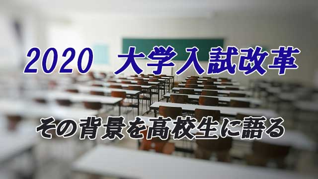

つい先ほどまで某私立高校の生徒向けの講演会に呼ばれ話して来たところ。
内容は「2020年大学入試改革はなぜ行われるか」という固いテーマ！
私としてはあまり難しい話にならないよう、なるべく身近な例をあげながら話すつもりだったが、テーマがテーマだけにやはり生徒たちには結構難解な内容だったと思う。
それでも生徒たちはよく聞いてくれた。夜の6時から1時間少々びっしりと話したにもかかわらず、最後まで集中力が切れることなくしっかり耳を傾ける姿勢は真面目そのもの。まさに以前の記事で「最近の若者は礼儀正しくマジメになった」と話した通りの姿がそこにあった。
夜だからお腹も空くだろうし（笑）疲れてもいるはずなのにこの態度は立派だと少々感動している。
終了後は何人かの生徒が質問にも来て、なかなか熱心かつ面白い意見も述べてくれた。
（質問内容はプライバシーの都合で書けないのが残念なくらいユニークで鋭いものだった）
とにかく私としては久しぶりの高校生相手の交流。とても楽しく充実した時間だった。もしかしたら彼らより私のほうが良い刺激をもらったかも知れない。
マァ、彼らも普段学校の先生とは違う視点からの話に新鮮な印象をもったようで、その点はお互いに良い場を共有できたと思う。
この機会を与えてくれた学校と生徒たちに感謝したい。
１．150年は長過ぎる‼
さて講演内容の要旨を簡単に述べておきたい。
なぜ大学入試の大幅な改革がいま行われようとしているか？
まず以下の2つの時代背景がある。
1. 150年以上教育システムは変わっていないこと。
2. 第2次大戦後の高度経済成長時につくられた社会システムや価値観が通用しなくなっている点
１については、明治時代になり日本が近代国家をつくる際欧米の文物（社会や経済システムや法体系、軍事科学技術など）を丸ごと取り入れたこと。その手段として教育制度も「出来上がったモノ」をひたすら覚え込む（丸暗記主義）方式をとった。以来「覚えることが勉強」という考えが日本の教育の常識となった。
（「それにしても教育の基本形が150年も変わらないのは長過ぎるよね。」と話すと生徒たちも同意したようにうなづく。）
結果として疑問をもち何かを学ぶ人間より、与えられたことをひたすら受け身に（無批判に）覚える人間ができ上がりやすいということ。つまり自分の頭で考えないのが弊害であると説明。
そしてもう一つの背景として戦後の高度成長は、大企業が規格大量生産で同じようなモノを大量に作る上で独創性よりは「言われたことを同じようにやる」人間を必要としたこと。当然教育システムもこの価値観に基くことになる。
（ここで生徒に『このような時代どんな価値観が優勢となるか』を質問。生徒からは『モノマネ』『体力勝負』『多勢に逆らわないこと』などが返ってきた）
ところが今やそんな時代ではない。モノが行き渡らず、作れば片っぱしから売れていた時代ではなく、欧米先進国に追いついてしまった現在どこかの猿マネをすれば良いという時代でもない。
２．常識を疑い自分で「ルール」をつくれ
では、これからの時代何が必要なのだろう。どんな才能をもった人間が社会に必要とされるのだろう。⇒生徒に質問。
ここで一人の生徒がスマートフォンの「顔認証」を例に出してくれたのでその話へ。
そう。携帯電話が完全に広まった今では、様々な新しい機能を装置することでさらにニーズを喚起するしかない。人々は単なる「モノ」を求めているのではない。本来の機能に新しい価値を与える、つまり付加価値をつけることで売れ行きが伸び市場も活性化する。
それは製品に限らずあらゆる領域（サービス業や芸能、娯楽そして社会制度に至るまで）に求められることである。
だからこの時代、人と同じことを考えるのではなく自分の頭で考え真にオリジナリティあふれる人間が必要ということになる。
それならいま君たちはどんな人間になろうと努めるべきか。
基本は自分で考えられる人間。人に言われたからやる、皆がそう言っているからそうするではない自分なりの立ち位置（スタンドポイント）をしっかりもつ人間ではないだろうか。
以下の3点を基準にして欲しい。
① 既にある（今ある）常識を疑う
皆が信じているルール、仕組み、考え方をいったんは疑うことが大事。「常識」を疑うことから新しい創造は始まるからだ。
② 自分なりに新しい「仕組み」や「ルール」を考え出せる人間
この世には様々な仕組みやルールがあふれるが必ずしも本当に必要かどうか検証せず、盲目的に従っている人が多い。それが安心だと思っているからだが、他者の作ったルールに従わされる人生は実は淋しく空しい。ちゃんとルールに従っているのに、どうして自分は不幸なのかと嘆く人になりやすい。
ルールに盲目的に従うより、ルールや仕組みを考案する人間のほうが人生を主体的に生きることになり充実する。
③ 実行すること
① ②のプロセスを経て、自分なりの「理想」をもったらそれを実行する。それには多少の勇気は必要だが見返りはとてつもなく大きい。勇気をもって信念に従って行動しよう。
３．得意分野を究めよう
最後のまとめとして次のように話した。
勉強でも部活でも趣味でも、自分の興味関心のあることをドンドン深く追究していこう。勘違いして欲しくないのは、先ほど「覚えるだけの勉強は時代遅れ」というようなことを言ったが「覚えなくていい」と言っているわけでは決してない。
むしろ自分の得意（好きな）分野は徹底して深いところまで究める姿勢でいて欲しい。
たとえ高校生であっても大学レベル、いやそれ以上の知識を得てもよいぐらいの気持ちでいて欲しい。知識という素材がなければ創造という建物も成り立たない。
いちばんダメなのは、テストがあるから入試があるから「仕方なくやる」という姿勢。これは何も身につかない。自分を成長させるため、自分の強みをトコトン伸ばしいたいから学ぶという姿勢をもつこと。これは勉強に限らない。人に言われたから、親や先生が言うからではなく自分が興味のあることは何でも自由に好きなように学ぶこと。普段の何気ない日常からそのように変えていくことが大事。たとえ小さなことでも「自分はどうしてこれをやるのか」を常に意識することだ。
正解は一つではない。「自分の考えたことが正しいのだ」という信念をもちながらも、心を開いて多様な考えも受け入れる。そんな人間になって欲しい。それが社会に必要とされながら、自らも幸せな人生を切り開いていくことになるからだ。
こう書いてみると講演というより授業に近かったと気づいた。この記事からは分かりにくいかも知れないが生徒たちは私が想像した以上に興味を持ってくれたし、理解力も高かったと感じている。
日本の未来は明るいと感じた。
エンライテックの詳細を見る ＞＞